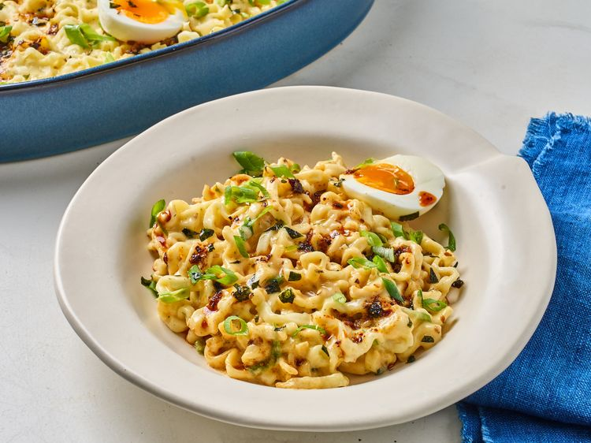

Odin Recipes
- Casserole
- 
- This cheesy Buldak ramen casserole tames the heat—a little—with the addition of creamy mozzarella and American cheese. It's a quick and easy bake.
-
Lime chicken

- This slow cooker cilantro-lime chicken is bursting with flavor. Try it in tacos for a nice change from plain chicken.
- Pasta

- This pasta dish with a fresh tomato sauce and fragrant basil is wonderful served with a green salad. The best thing about this meal is that it's easy to throw together in just a few minutes.